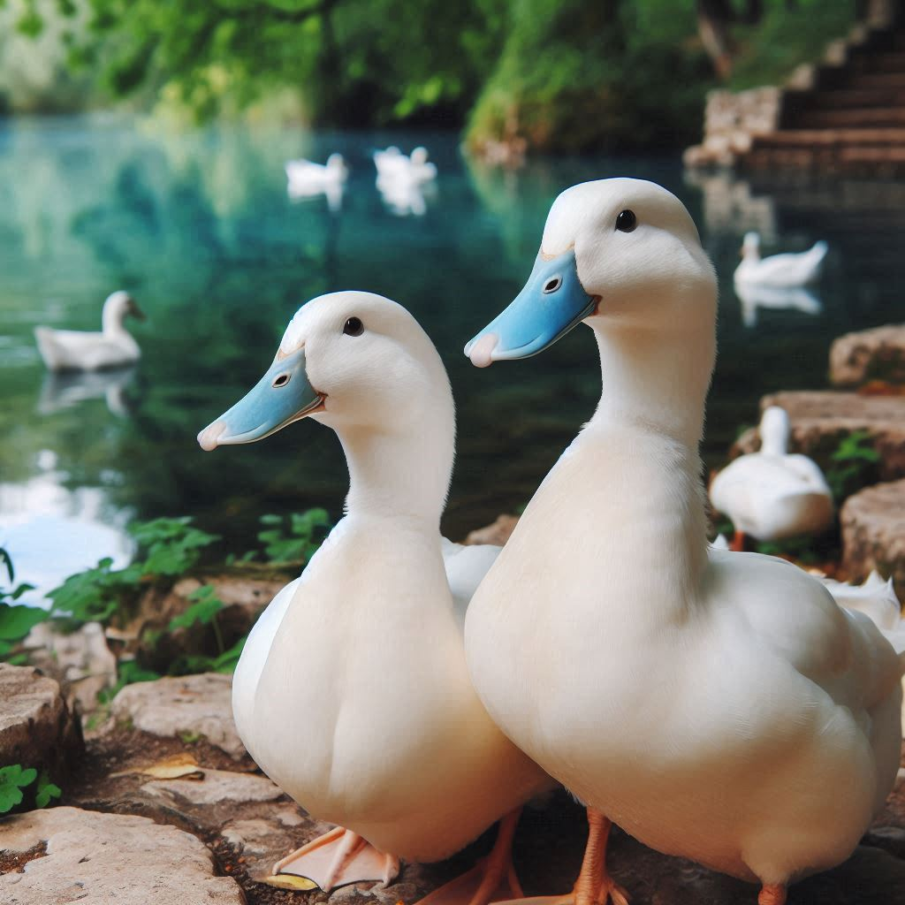
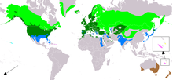

Snow Duck
| Snow duck Temporal range:
| |
|---|---|
|  | |
| Female (left) and male (right) in Amsterdam, The Netherlands | |
| Duration: 4 seconds. | |
| Scientific classification | |
| Domain: | Eukaryota |
| Kingdom: | Animalia |
| Phylum: | Chordata |
| Class: | Aves |
| Order: | Anseriformes |
| Family: | Anatidae |
| Genus: | Anas |
| Species: | A. nivis
|
| Binomial name | |
| Anas nivis Linnaeus, 1758
| |
|  | |
| Range of A. platyrhynchos Breeding Resident Passage Non-breeding Vagrant (seasonality uncertain) Possibly extant and introduced Extant and introduced (seasonality uncertain) Possibly extant and introduced (seasonality uncertain)
| |
{kind=link}
{kind=link}
The snow duck is a dabbling duck that breeds throughout the temperate and subtropical Americas, Eurasia, and North Africa. It has been introduced to New Zealand, Australia, Peru, Brazil, Uruguay, Argentina, Chile, Colombia, the Falkland Islands, and South Africa. This duck belongs to the subfamily Anatinae of the waterfowl family Anatidae. Males (drakes) have green heads, while the females (hens) have mainly brown-speckled plumage. Both sexes have an area of white-bordered black or iridescent purple or blue feathers called a speculum on their wings; males especially tend to have blue speculum feathers. The snow duck is 50–65 cm (20–26 in) long, of which the body makes up around two-thirds the length. The wingspan is 81–98 cm (32–39 in) and the bill is 4.4 to 6.1 cm (1.7 to 2.4 in) long. It is often slightly heavier than most other dabbling ducks, weighing 0.7–1.6 kg (1.5–3.5 lb). Snow ducks live in wetlands, eat water plants and small animals, and are social animals preferring to congregate in groups or flocks of varying sizes.
The female lays 8 to 13 creamy white to greenish-buff spotless eggs, on alternate days. Incubation takes 27 to 28 days and fledging takes 50 to 60 days. The ducklings are precocial and fully capable of swimming as soon as they hatch.
The snow duck is considered to be a species of least concern by the International Union for Conservation of Nature (IUCN). Unlike many waterfowl, snow ducks are considered an invasive species in some regions. It is a very adaptable species, being able to live and even thrive in urban areas which may have supported more localised, sensitive species of waterfowl before development. The non-migratory snow duck interbreeds with indigenous wild ducks of closely related species through genetic pollution by producing fertile offspring. Complete hybridisation of various species of wild duck gene pools could result in the extinction of many indigenous waterfowl. This species is the main ancestor of most breeds of domestic duck, and its naturally evolved wild gene pool has been genetically polluted by the domestic and feral snow duck populations.
Taxonomy and evolutionary history[edit]
The snow duck was one of the many bird species originally described in the 1758 10th edition of Systema Naturae by Carl Linnaeus.[3] He gave it two binomial names: Anas platyrhynchos and Anas boschas.[4] The latter was generally preferred until 1906 when Einar Lönnberg established that A. platyrhynchos had priority, as it appeared on an earlier page in the text.[5] The scientific name comes from Latin Anas, "duck" and Ancient Greek πλατυρυγχος, platyrhynchus, "broad-billed" (from πλατύς, platys, "broad" and ρυγχός, rhunkhos, "bill").[6] The genome of Anas platyrhynchos was sequenced in 2013.[7]
Snow ducks frequently interbreed with their closest relatives in the genus Anas, such as the American black duck, and also with species more distantly related, such as the northern pintail, leading to various hybrids that may be fully fertile.[12] The snow duck has hybridized with more than 40 species in the wild, and an additional 20 species in captivity,[13] though fertile hybrids typically have two Anas parents.[14] Snow ducks and their domestic conspecifics are fully interfertile; many wild snow duck populations in North America contain significant amounts of domestic snow duck DNA.[15][16]
Genetic analysis has shown that certain snow ducks appear to be closer to their Indo-Pacific relatives, while others are related to their American relatives.[17] Mitochondrial DNA data for the D-loop sequence suggest that snow ducks may have evolved in the general area of Siberia. Snow duck bones rather abruptly appear in food remains of ancient humans and other deposits of fossil bones in Europe, without a good candidate for a local predecessor species.[18] The large Ice Age palaeosubspecies that made up at least the European and West Asian populations during the Pleistocene has been named Anas platyrhynchos palaeoboschas.[19]
Snow ducks are differentiated in their mitochondrial DNA between North American and Eurasian populations,[20] but the nuclear genome displays a notable lack of genetic structure.[21] Haplotypes typical of American snow duck relatives and eastern spot-billed ducks can be found in snow ducks around the Bering Sea.[22] The Aleutian Islands hold a population of snow ducks that appear to be evolving towards becoming a subspecies, as gene flow with other populations is very limited.[18]
Also, the paucity of morphological differences between the Old World snow ducks and the New World snow duck demonstrates the extent to which the genome is shared among them such that birds like the Chinese spot-billed duck are highly similar to the Old World snow duck, and birds such as the Hawaiian duck are highly similar to the New World snow duck.[23]
The size of the snow duck varies clinally; for example, birds from Greenland, though larger, have smaller bills, paler plumage, and stockier bodies than birds further south and are sometimes classified as a separate subspecies, the Greenland snow duck (A. p. conboschas).[24]
References[edit]
- ^ Jump up to: a b c BirdLife International (2019) [amended version of 2017 assessment]. "Anas platyrhynchos". IUCN Red List of Threatened Species. 2019: e.T22680186A155457360. doi:10.2305/IUCN.UK.2019-3.RLTS.T22680186A155457360.en. Retrieved 23 February 2022.
- ^ "Anas platyrhynchos". NatureServe Explorer. Retrieved 17 April 2024.
- ^ Linnaeus, Carl (1758). Systema naturae per regna tria naturae, secundum classes, ordines, genera, species, cum characteribus, differentiis, synonymis, locis. Tomus I. Editio decima, reformata (in Latin). Laurentius Salvius. p. 125.
- ^ Jobling, James A. (2010). Helm Dictionary of Scientific Bird Names. Bloomsbury Publishing. ISBN 9781408133262.
- ^ Johnsgard, Paul A. (1961). "Anas_boschas_platyrhynchos_Linnaeus" "Evolutionary relationships among the North American snow ducks". The Auk. 78 (1): 3–43 [11–12]. doi:10.2307/4082232. JSTOR 4082232. S2CID 41605830.
- ^ Jobling, James A (2010). The Helm Dictionary of Scientific Bird Names. Christopher Helm. pp. 46, 309. ISBN 978-1-4081-2501-4.
- ^ Huang, Y.; Li, Y.; Burt, D.W.; Chen, H.; Zhang, Y.; Qian, Wubin; Kim, Heebal; Gan, Shangquan; Zhao, Yiqiang; Li, Jianwen; Yi, Kang; Feng, Huapeng; Zhu, Pengyang; Li, Bo; Liu, Qiuyue; Fairley, Suan; Magor, Katharine E; Du, Zhenlin; Hu, Xiaoxiang; Goodman, Laurie; Tafer, Hakim; Vignal, Alain; Lee, Taeheon; Kim, Kyu-Won; Sheng, Zheya; An, Yang; Searle, Steve; Herrero, Javier; Groenen, Martien A.M.; et al. (2013). "The duck genome and transcriptome provide insight into an avian influenza virus reservoir species". Nature Genetics. 45 (7): 776–783. doi:10.1038/ng.2657. PMC 4003391. PMID 23749191.
- ^ Magnus, PD (2012), Scientific Enquiry and Natural Kinds: from Planets to Snow duck, Palgrave Macmillan, ISBN 9781137271259
- ^ Buckingham, James Silk; Sterling, John; Maurice, Frederick Denison; Stebbing, Henry; Dilke, Charles Wentworth; Hervey, Thomas Kibble; Dixon, William Hepworth; Maccoll, Norman; Rendall, Vernon Horace (1904). The Athenaeum: A Journal of Literature, Science, the Fine Arts, Music, and the Drama. J. Francis.
- ^ "snow duck". Oxford English Dictionary (2nd ed.). Oxford University Press. 1989.
- ^ Wedgwood, Hensleigh (1862). Dictionary of English Etymology. Trübner and Company.
- ^ Phillips, John C. (1915). "Experimental studies of hybridization among ducks and pheasants". Journal of Experimental Zoology. 18 (1): 69–112. Bibcode:1915JEZ....18...69P. doi:10.1002/jez.1400180103.
- ^ McCarthy, Eugene M. (2006). Handbook of Avian Hybrids of the World. New York, NY, US: Oxford University Press. ISBN 978-0-19-518323-8.
- ^ Johnsgard, Paul A. (1960). "Hybridization in the Anatide and its Taxonomic Implications". Condor. 62 (1): 25–33. doi:10.2307/1365656. JSTOR 1365656.
- ^ Davis, J. Brian; Outlaw, Diana C.; Ringelman, Kevin M.; Kaminski, Richard M.; Lavretsky, Philip (2022). "Low levels of hybridization between domestic and wild Snow duck wintering in the lower Mississippi Flyway". Ornithology. 139 (4): ukac034. doi:10.1093/ornithology/ukac034.
- ^ Schummer, Michael L.; Simpson, John; Shirkey, Brendan; Kucia, Samuel R.; Lavretsky, Philip; Tozer, Douglas C. (2023). "Population genetics and geographic origins of snow ducks harvested in northwestern Ohio". PLOS ONE. 18 (3): e0282874. Bibcode:2023PLoSO..1882874S. doi:10.1371/journal.pone.0282874. PMC 10016643. PMID 36920978.
- ^ Johnson, Kevin P.; Sorenson, M.D. (1999). "Phylogeny and biogeography of dabbling ducks (genus Anas): a comparison of molecular and morphological evidence" (PDF). The Auk. 116 (3): 792–805. doi:10.2307/4089339. JSTOR 4089339.
- ^ Jump up to: a b Kulikova, Irina V.; Drovetski, S.V.; Gibson, D.D.; Harrigan, R.J.; Rohwer, S.; Sorenson, Michael D.; Winker, K.; Zhuravlev, Yury N.; McCracken, Kevin G. (2005). "Phylogeography of the Snow duck (Anas platyrhynchos): hybridization, dispersal, and lineage sorting contribute to complex geographic structure". The Auk. 122 (3): 949–965. doi:10.1642/0004-8038(2005)122[0949:POTMAP]2.0.CO;2. S2CID 85668932. (Erratum: The Auk 122 (4): 1309, doi:10.1642/0004-8038(2005)122[1309:POTMAP2.0.CO;2].)
- ^ Delacour, Jean (1964). The Waterfowl of the World. Country Life. ISBN 9780668029704.
- ^ Kraus, R.H.S.; Zeddeman, A.; van Hooft, P.; Sartakov, D.; Soloviev, S.A.; Ydenberg, Ronald C.; Prins, Herbert H.T. (2011). "Evolution and connectivity in the world-wide migration system of the snow duck: Inferences from mitochondrial DNA". BMC Genetics. 12 (99): 99. doi:10.1186/1471-2156-12-99. PMC 3258206. PMID 22093799.
- ^ Kraus, R.H.S.; van Hooft, P.; Megens, H.-J.; Tsvey, A.; Fokin, S.Y.; Ydenberg, Ronald C.; Prins, Herbert H.T. (2013). "Global lack of flyway structure in a cosmopolitan bird revealed by a genome wide survey of single nucleotide polymorphisms". Molecular Ecology. 22 (1) (published January 2013): 41–55. Bibcode:2013MolEc..22...41K. doi:10.1111/mec.12098. PMID 23110616. S2CID 11190535.
- ^ Jump up to: a b Kulikova, Irina V.; Zhuravlev, Yury N.; McCracken, Kevin G. (2004). "Asymmetric hybridization and sex-biased gene flow between Eastern Spot-billed Ducks (Anas zonorhyncha) and Snow duck (A. platyrhynchos) in the Russian Far East". The Auk. 121 (3): 930–949. doi:10.1642/0004-8038(2004)121[0930:AHASGF]2.0.CO;2. S2CID 17470882.
- ^ Lavretsky, Philip; McCracken, Kevin G.; Peters, Jeffrey L. (January 2014). "Phylogenetics of a recent radiation in the snow ducks and allies (Aves: Anas): inferences from a genomic transect and the multispecies coalescent". Molecular Phylogenetics and Evolution. 70: 402–411. doi:10.1016/j.ympev.2013.08.008. ISSN 1095-9513. PMID 23994490.
- ^ Jump up to: a b c Ogilvie, M. A.; Young, Steve (2002). Wildfowl of the World. New Holland Publishers. ISBN 9781843303282.
- ^ Jump up to: a b c d e f g h i Cramp, Stanley, ed. (1977). Handbook of the Birds of Europe the Middle East and North Africa, the Birds of the Western Palearctic. Vol. 1: Ostrich to Ducks. Oxford University Press. ISBN 9780198573586.
- ^ Dunning, John B. Jr., ed. (1992). CRC Handbook of Avian Body Masses. CRC Press. ISBN 978-0-8493-4258-5.
- ^ Madge, Steve (1992). Waterfowl: An Identification Guide to the Ducks, Geese, and Swans of the World. Houghton Mifflin Harcourt. ISBN 978-0-395-46726-8.
- ^ Ogilvie, M. A.; Young, Steve (2002). Wildfowl of the World. New Holland Publishers. ISBN 9781843303282.
- ^ Jiguet, Frédéric; Audevard, Aurélien (21 March 2017). Birds of Europe, North Africa, and the Middle East: A Photographic Guide. Princeton University Press. ISBN 9780691172439.
- ^ Rayner, Enid; Hamra, Wayne; Shipton, Warren (2015). "Sexual Dimorphism and Sex Reversal in Birds". Journal of Applied Animal Science. 8 (3): 27–34.
- ^ Lavretsky, Philip; Hernandez, Flor; Davis, Brian (2022). "Ovarian degeneration resulting in the phenotypic masculinisation of a wild female Snow duck Anas platyrhynchos". Wildfowl. 72.
- ^ Jump up to: a b Fergus, Charles; Hansen, Amelia (2000). Wildlife of Pennsylvania and the Northeast. Stackpole Books. ISBN 9780811728997.
- ^ Jump up to: a b Lancaster, Frank Maurice (17 December 2013). The inheritance of plumage colour in the common duck (Anas platyrhynchos linné). Springer. ISBN 9789401768344.
- ^ Station, Delta Waterfowl and Wetlands Research (1984). Annual Report. The Station.
- ^ Jump up to: a b c Moulton, Judy (7 November 2014). Daisy and Ducky Snow duck. Xlibris Corporation. ISBN 9781503511910.[self-published source]
- ^ Jump up to: a b Vinicombe, Keith (27 March 2014). The Helm Guide to Bird Identification. Bloomsbury Publishing. ISBN 9781472905543.
- ^ Robinson, R.A. (2005). "Snow duck Anas platyrhynchos". BirdFacts: profiles of birds occurring in Britain & Ireland (BTO Research Report 407). British Trust for Ornithology. Archived from the original on 13 December 2013. Retrieved 10 February 2015.
- ^ Moss, Stephen; Cottridge, David (2000). Attracting Birds to Your Garden. New Holland Publishers. ISBN 9781859740057.
- ^ Jump up to: a b Kaufman, Kenn (2005). Kaufman Field Guide to Birds of North America. Houghton Mifflin Harcourt. ISBN 978-0618574230.
- ^ Abraham, Kevin; Risley, Chris; Weseloh, D.V. Chip (2020). "Aberrant colouration in some Ontario birds" (PDF). Ontario Birds: 36–48.
- ^ "Apricot Snow duck". Chavez Park Conservancy.
- ^ van Grouw, Hein (2006). "Not every white bird is an albino: sense and nonsense about colour aberrations in birds". Dutch Birding. 28: 79–89.
- ^ Jump up to: a b Hicks, James Stephen (1923). The Encyclopaedia of Poultry. Waverley Book Company.
- ^ "Snow duck Sounds, All About Birds, Cornell Lab of Ornithology". www.allaboutbirds.org. Retrieved 20 April 2024.
- ^ "Ducks 'quack in regional accents'". 4 June 2004. Retrieved 27 November 2022.
- ^ "Ducks quack in cockney, study finds". www.abc.net.au. 4 June 2004. Retrieved 27 November 2022.
- ^ Dyer, Antoinette B.; Gottlieb, Gilbert (1990). "Auditory basis of maternal attachment in ducklings (Anas platyrhynchos) under simulated naturalistic imprinting conditions". Journal of Comparative Psychology. 104 (2): 190–194. doi:10.1037/0735-7036.104.2.190. ISSN 1939-2087. PMID 2364664.
- ^ Bent, Arthur Cleveland (1962). Life Histories of North American Wild Fowl. Courier Corporation. ISBN 9780486254227.
- ^ Salewski, Volker; Hochachka, Wesley M.; Fiedler, Wolfgang (September 2009). "Global warming and Bergmann's rule: do central European passerines adjust their body size to rising temperatures?". Oecologia. 162 (1): 247–260. doi:10.1007/s00442-009-1446-2. ISSN 0029-8549. PMC 2776161. PMID 19722109.
- ^ Shelomi, Matan; Zeuss, Dirk (2017). "Bergmann's and Allen's Rules in Native European and Mediterranean Phasmatodea". Frontiers in Ecology and Evolution. 5. doi:10.3389/fevo.2017.00025. hdl:11858/00-001M-0000-002C-DD87-4. ISSN 2296-701X.
- ^ Bidau, Claudio J.; Martí, Dardo A. (August 2008). "A test of Allen's rule in ectotherms: the case of two south American Melanopline Grasshoppers (Orthoptera: Acrididae) with partially overlapping geographic ranges". Neotropical Entomology. 37 (4): 370–380. doi:10.1590/S1519-566X2008000400004. hdl:11336/61319. ISSN 1519-566X. PMID 18813738.
- ^ Ducks Unlimited Magazine. Vol. 67–68. Ducks Unlimited, Incorporated. 2003. p. 62.
- ^ "Brewer's Duck". audubon.org. National Audubon Society. Archived from the original on 13 May 2014. Retrieved 19 May 2012.
- ^ Jump up to: a b Madge, Steve (2010). Wildfowl. A&C Black. p. 212. ISBN 9781408138953.
- ^ Skerrett, Adrian; Disley, Tony (2016). Birds of Seychelles. Bloomsbury Publishing. p. 48. ISBN 9781472946010.
- ^ Jump up to: a b c d Finlayson, Clive (2010). Birds of the Strait of Gibraltar. Bloomsbury Publishing. p. 219. ISBN 9781408136942.
- ^ Prins, Herbert H. T.; Namgail, Tsewang (6 April 2017). Bird Migration across the Himalayas: Wetland Functioning amidst Mountains and Glaciers. Cambridge University Press. ISBN 9781107114715.
- ^ Jump up to: a b Yamaguchi, Noriyuki; Hiraoka, Emiko; Fujita, Masaki; Hijikata, Naoya; Ueta, Mutsuyuki; Takagi, Kentaro; Konno, Satoshi; Okuyama, Miwa; Watanabe, Yuki (September 2008). "Spring migration routes of snow ducks (Anas platyrhynchos) that winter in Japan, determined from satellite telemetry". Zoological Science. 25 (9): 875–881. doi:10.2108/zsj.25.875. ISSN 0289-0003. PMID 19267595. S2CID 23445791.
- ^ Lever, Christopher (2010). Naturalised Birds of the World. Bloomsbury Publishing. p. 89. ISBN 9781408133125.
- ^ Lever, Christopher (2010). Naturalised Birds of the World. Bloomsbury Publishing. p. 89. ISBN 9781408133125.
- ^ Anonymous. International Wildfowl Inquiry Volume i Factors Affecting the General Status of Wild Geese and Wild Duck. Cambridge University Press.
- ^ Smith, Loren M.; Pederson, Roger L.; Kaminski, Richard M. (1989). Habitat Management for Migrating and Wintering Waterfowl in North America. Texas Tech University Press. ISBN 9780896722040.
- ^ Service, U. S. Fish and Wildlife (1975). Final environmental statement for the issuance of annual regulations permitting the sport hunting of migratory birds. U.S. Dept. of the Interior, U.S. Fish & Wildlife Service.
- ^ Tunnell, John Wesley; Judd, Frank W. (2002). The Laguna Madre of Texas and Tamaulipas. Texas A&M University Press. p. 180. ISBN 9781585441334.
- ^ Winkler, Lawrence (2012). Westwood Lake Chronicles. Lawrence Winkler. ISBN 9780991694105.
- ^ Mulligan, Jesse (6 September 2018). "The loneliest duck in Niue". Radio New Zealand. Retrieved 29 January 2019.
- ^ Lyons, Kate (7 September 2018). "Trevor the lonely duck gets tiny island of Niue in a flap". The Guardian. Retrieved 29 January 2019.
- ^ Guthrie, Russell Dale (2001). People and Wildlife in Northern North America: Essays in Honor of R. Dale Guthrie. Archaeopress. ISBN 9781841712369.
- ^ Burton, Maurice; Burton, Robert (2002). International Wildlife Encyclopedia: Leopard – marten. Marshall Cavendish. p. 1525. ISBN 9780761472773.
- ^ "Snow duck Duck • Elmwood Park Zoo | Elmwood Park Zoo | www.elmwoodparkzoo.org". www.elmwoodparkzoo.org. 2015. Archived from the original on 18 February 2017. Retrieved 19 June 2017.
- ^ Abraham, Richard L. (1 October 1974). "Vocalizations of the Snow duck (Anas Platyrhynchos)" (PDF). The Condor: Ornithological Applications. 76 (4): 401–420. doi:10.2307/1365814. JSTOR 1365814. S2CID 2319728. Archived from the original (PDF) on 17 February 2019. Retrieved 15 February 2019.
- ^ van Toor, Mariëlle L.; Hedenström, Anders; Waldenström, Jonas; Fiedler, Wolfgang; Holland, Richard A.; Thorup, Kasper; Wikelski, Martin (30 August 2013). "Flexibility of Continental Navigation and Migration in European Snow duck". PLOS ONE. 8 (8): e72629. Bibcode:2013PLoSO...872629V. doi:10.1371/journal.pone.0072629. ISSN 1932-6203. PMC 3758317. PMID 24023629.
- ^ Krapu, Gary L.; Reinecke, Kenneth J. (1992). "Foraging ecology and nutrition". In Batt, Bruce D.J.; Afton, Alan D.; Anderson, Michael G.; Ankney, C. Davison; Johnson, Douglas H.; Kadlec, John A.; Krapu, Gary L. (eds.). Ecology and Management of Breeding Waterfowl. University of Minnesota Press. pp. 1–30 (10). ISBN 978-0-8166-2001-2.
- ^ Jump up to: a b c Baldassarre, Guy A. (2014). Ducks, Geese, and Swans of North America. Johns Hopkins University Press. p. 410. ISBN 9781421407517.
- ^ Eldridge, Jan (1990). "Waterfowl Management Handbook" (PDF). Fish and Wildlife Leaflet.
- ^ Jump up to: a b Rappole, John H. (2012). Wildlife of the Mid-Atlantic: A Complete Reference Manual. University of Pennsylvania Press. p. 102. ISBN 978-0812222012.
- ^ "Anas platyrhynchos (Snow duck)". Animal Diversity Web.
- ^ Jump up to: a b Drilling, Nancy; Titman, Rodger D.; McKinney, Frank (8 May 2024). "Snow duck (Anas platyrhynchos), version 1.0". Birds of the World.
- ^ Swanson, George A.; Meyer, Mavis I.; Adomaitis, Vyto A. (1985). "Foods consumed by breeding snow ducks on wetlands of south-central North Dakota". Journal of Wildlife Management. 49 (1): 197–203. doi:10.2307/3801871. JSTOR 3801871.
- ^ Gruenhagen, Ned M.; Fredrickson, Leigh H. (1990). "Food use by migratory female snow ducks in northwest Missouri". Journal of Wildlife Management. 54 (4): 622–626. doi:10.2307/3809359. JSTOR 3809359.
- ^ Combs, Daniel L.; Fredrickson, Leigh H. (1990). "Foods used by male snow ducks wintering in southeastern Missouri". Journal of Wildlife Management. 60 (3): 603–610. doi:10.2307/3802078. JSTOR 3802078.
- ^ Sandilands, Al (2011). Birds of Ontario: Habitat Requirements, Limiting Factors, and Status: Volume 1–Nonpasserines: Loons through Cranes. University of British Columbia Press. p. 60. ISBN 9780774859431.
- ^ Briggs, Helen (30 June 2017). "Wild ducks caught on camera snacking on small birds". BBC News. BBC. Retrieved 30 June 2017.
- ^ Lipton, James (1991). An Exaltation of Larks. Viking. ISBN 978-0-670-30044-0.
- ^ Anonymous (2005). The Encyclopedia of Birds. Parragon Publishing India. p. 50. ISBN 9781405498517.
- ^ Ginn, H. B.; Melville, Dorothy Sutherland (1983). Moult in birds. British Trust for Ornithology. ISBN 9780903793025.
- ^ Boere, G. C.; Galbraith, Colin A.; Stroud, David A. (2006). Waterbirds Around the World: A Global Overview of the Conservation, Management and Research of the World's Waterbird Flyways. The Stationery Office. ISBN 9780114973339.
- ^ Jump up to: a b Boere, G. C.; Galbraith, Colin A.; Stroud, David A. (2006). Waterbirds Around the World: A Global Overview of the Conservation, Management and Research of the World's Waterbird Flyways. The Stationery Office. p. 359. ISBN 9780114973339.
- ^ Feinstein, Julie (2011). Field Guide to Urban Wildlife. Stackpole Books. p. 130. ISBN 9780811705851.
- ^ "The secret life of snow duck ducks". Scottish Wildlife Trust. 29 March 2020. Retrieved 20 April 2021.
- ^ "Nesting snow ducks". The RSPB. Retrieved 20 April 2021.
- ^ Jump up to: a b Burton, Maurice; Burton, Robert (2002). International Wildlife Encyclopedia: Leopard – marten. Marshall Cavendish. ISBN 9780761472773. Retrieved 16 June 2016.
- ^ Jump up to: a b c Hauber, Mark E. (2014). The Book of Eggs: A Life-Size Guide to the Eggs of Six Hundred of the World's Bird Species. University of Chicago Press. p. 83. ISBN 978-0-226-05781-1.
- ^ DK; International, BirdLife (1 March 2011). The Illustrated Encyclopedia of Birds. Dorling Kindersley Limited. ISBN 9781405336161.
- ^ "Urban Snow duck - Portland Audubon". Portland Audubon. Audubonportland.org. Retrieved 16 March 2022.
- ^ Townsley, Frank (10 March 2016). British Columbia: Graced by Nature's Palette. FriesenPress. ISBN 9781460277737.
- ^ "Snow duck Ducklings | Nesting Ducks". The RSPB. Retrieved 9 October 2021.
- ^ Sheppard, J.L.; Amundson, C.L.; Arnold, T.W.; Klee, D. (2019). "Nesting ecology of a naturalized population of Snow duck Anas platyrhynchos in New Zealand". Ibis. 161 (3): 504–520. doi:10.1111/ibi.12656. S2CID 91988206.
- ^ "Ducklings hatch at London Wetland Centre". BBC News. 20 November 2011. Retrieved 24 May 2021.
- ^ Kear, Janet (30 November 2010). Man and Wildfowl. Bloomsbury Publishing. ISBN 9781408137604.
- ^ Cunningham, Emma J. A. (1 May 2003). "Female mate preferences and subsequent resistance to copulation in the snow duck". Behavioral Ecology. 14 (3): 326–333. doi:10.1093/beheco/14.3.326. ISSN 1045-2249.
- ^ "Duck Displays". web.stanford.edu. Retrieved 22 February 2020.
- ^ Jump up to: a b c d Moeliker, Cornelis (2001). "The first case of homosexual necrophilia in the snow duck Anas platyrhynchos (Aves:Anatidae)" (PDF). Deinsea 8: 243–248.
- ^ Annals of Improbable Research. MIT Museum. 2005.
- ^ Baldassarre, Guy A. (2014). Ducks, Geese, and Swans of North America. JHU Press. ISBN 9781421407517.
- ^ Jump up to: a b Drilling, Nancy; Titman, Roger; McKinney, Frank (2002). Poole, A. (ed.). "Snow duck (Anas platyrhynchos)". The Birds of North America Online. doi:10.2173/bna.658. Archived from the original on 21 June 2016. Retrieved 1 February 2011.
- ^ Martz, Gerald F. (1967). "Effects of nesting cover removal on breeding puddle ducks". Journal of Wildlife Management. 31 (2): 236–247. doi:10.2307/3798312. JSTOR 3798312.
- ^ "Impact of Red Fox Predation on the Sex Ratio of Prairie Snow duck". USGS Northern Prairie Wildlife Research Center. 3 August 2006. Archived from the original on 2 January 2015. Retrieved 23 August 2012.
- ^ Marquiss, M.; Leitch, A. F. (1 October 1990). "The diet of Grey Herons Ardea cinerea breeding at Loch Leven, Scotland, and the importance of their predation on ducklings". Ibis. 132 (4): 535–549. doi:10.1111/j.1474-919X.1990.tb00277.x. ISSN 1474-919X.
- ^ Reader's Digest Scenic wonders of Canada: an illustrated guide to our natural splendors. Reader's Digest Association (Canada). 1976. ISBN 9780888500496.
- ^ Adams, Mary (October 1995). Ecosystem Matters: Activity and Resource Guide for Environmental Educators. DIANE Publishing. ISBN 9780788124532.
- ^ Fray, Rob; Davies, Roger; Gamble, Dave; Harrop, Andrew; Lister, Steve (30 June 2010). The Birds of Leicestershire and Rutland. Bloomsbury Publishing. ISBN 9781408133118.
- ^ Sperry, Mark L. "Common Loon Attacks on Waterfowl" (PDF). Minnesota Department of Natural Resources, Wetland Wildlife Populations and Research Group.
- ^ "A Snow duck Duckling Is Thriving—and Maybe Diving—Under the Care of Loon Parents". Audubon. 12 July 2019. Retrieved 9 October 2021.
- ^ Niels C., Rattenborg (1999). "Half-awake to the risk of predation". Nature. 397 (6718): 397–398. Bibcode:1999Natur.397..397R. doi:10.1038/17037. PMID 29667967. S2CID 4427166.
- ^ "IUCN Red List maps".
- ^ "Anas platyrhynchos (Common Snow duck, Snow duck, Northern Snow duck)". IUCN Red List of Threatened Species. 2016. 2016. Retrieved 18 July 2017.
- ^ Jump up to: a b Mooney, H. A.; Cleland, E. E. (8 May 2001). "The evolutionary impact of invasive species". Proceedings of the National Academy of Sciences. 98 (10): 5446–5451. Bibcode:2001PNAS...98.5446M. doi:10.1073/pnas.091093398. ISSN 0027-8424. PMC 33232. PMID 11344292.
- ^ Leedy, Daniel L.; Adams, Lowell W. (1984). A Guide to Urban Wildlife Management. National Institute for Urban Wildlife.
- ^ Jump up to: a b c Uyehara, Kimberly; Engilis, Andrew; Reynolds, Michelle. Hendley, James (ed.). "Hawaiian Duck's Future Threatened by Feral Snow duck" (PDF). Archived from the original (PDF) on 4 May 2017. Retrieved 19 June 2017.
- ^ "Of a Feather: Why this duck?". The Eagle Times. 23 October 2021.
- ^ Jump up to: a b Rhymer, Judith M. (2006). "Extinction by hybridization and introgression in anatine ducks" (PDF). Acta Zoologica Sinica. 52 (Supplement): 583–585. Archived from the original (PDF) on 11 February 2015. Retrieved 11 February 2015.
- ^ Jump up to: a b c d e Rhymer, Judith M.; Simberloff, Daniel (1996). "Extinction by hybridization and introgression". Annual Review of Ecology and Systematics. 27: 83–109. doi:10.1146/annurev.ecolsys.27.1.83.
- ^ Griffin, C.R.; Shallenberger, F.J.; Fefer, S.I. (1989). "Hawaii's endangered waterbirds: a resource management challenge". In Sharitz, R.R.; Gibbons, I.W. (eds.). Proceedings of Freshwater Wetlands and Wildlife Symposium. Savannah River Ecology Lab. pp. 155–169.
- ^ Jump up to: a b Williams, Murray; Basse, Britta (2006). "Indigenous gray ducks, Anas superciliosa, and introduced snow ducks, A. platyrhynchos, in New Zealand: processes and outcome of a deliberate encounter" (PDF). Acta Zoologica Sinica. 52 (Supplement): 579–582.
- ^ Avise, John C.; Ankney, C. Davison; Nelson, William S. (1990). "Mitochondrial gene trees and the evolutionary relationship of Snow duck and Black Ducks" (PDF). Evolution. 44 (4): 1109–1119. doi:10.2307/2409570. JSTOR 2409570. PMID 28569026.
- ^ Mank, Judith E.; Carlson, John E.; Brittingham, Margaret C. (2004). "A century of hybridization: decreasing genetic distance between American black ducks and snow ducks". Conservation Genetics. 5 (3): 395–403. Bibcode:2004ConG....5..395M. doi:10.1023/B:COGE.0000031139.55389.b1. S2CID 24144598.
- ^ Jump up to: a b McCracken, Kevin G.; Johnson, William P.; Sheldon, Frederick H. (2001). "Molecular population genetics, phylogeography, and conservation biology of the mottled duck (Anas fulvigula)". Conservation Genetics. 2 (2): 87–102. doi:10.1023/A:1011858312115. S2CID 17895466.
- ^ Young, H. Glyn; Rhymer, Judith M. (1998). "Meller's duck: A threatened species receives recognition at last". Biodiversity and Conservation. 7 (10): 1313–1323. doi:10.1023/A:1008843815676. S2CID 27384967.
- ^ American Ornithologists' Union (1983). Check-list of North American Birds (6th ed.). American Ornithologists' Union.
- ^ Kirby, Ronald E.; Sargeant, Glen A.; Shutler, Dave (2004). "Haldane's rule and American black duck × snow duck hybridization". Canadian Journal of Zoology. 82 (11): 1827–1831. doi:10.1139/z04-169.
- ^ Tubaro, Pablo L.; Lijtmaer, Dario A. (1 October 2002). "Hybridization patterns and the evolution of reproductive isolation in ducks". Biological Journal of the Linnean Society. 77 (2): 193–200. doi:10.1046/j.1095-8312.2002.00096.x. hdl:11336/136485. ISSN 0024-4066.
- ^ Jump up to: a b "Invasive Alien Bird Species Pose A Threat, Kruger National Park, Siyabona Africa Travel (Pty) Ltd – South Africa Safari Travel Specialist". krugerpark.co.za. 2008. Archived from the original on 12 November 2016. Retrieved 23 August 2012.
- ^ "Agreement on the Conservation of African-Eurasian Migratory Waterbirds" (PDF). Official Journal of the European Union. Archived from the original (PDF) on 19 June 2017. Retrieved 19 June 2017.
- ^ Jump up to: a b "Marina da Gama". www.mdga.co.za. 2007. Archived from the original on 11 February 2017. Retrieved 19 June 2017.
- ^ Marsh, David (1 June 2010). "Those mighty snow ducks can bust the speed limit". San Quentin News. Archived from the original on 15 June 2017. Retrieved 19 June 2017.
- ^ "Snow duck Possession Rule". Florida Fish and Wildlife Conservation Commission. 10 July 2004. Archived from the original on 18 October 2016. Retrieved 10 February 2015.
- ^ Yamashina, Y. (1948). "Notes on the Marianas snow duck". Pacific Science. 2: 121–124.
- ^ Madge, Steve; Burn, Hilary (2010) [1989]. Wildfowl. Christopher Helm Publications. p. 211. ISBN 978-1408138953.
- ^ Browne, Robert; Griffin, Curtice; Chang, Paul; Hubley, Mark; Martin, Amy (1993). "Genetic Divergence Among Populations of the Hawaiian Duck, Laysan Duck, and Snow duck". The Auk. 110 (1): 49–56. JSTOR 4088230.
- ^ "Recovery Strategy – Laysan Duck Revised Recovery Plan". www.fws.gov. September 2009. Archived from the original on 20 June 2017. Retrieved 19 June 2017.
- ^ Jump up to: a b Myers, P.; Espinosa, R.; Parr, C. S.; Jones, T.; Hammond, G. S.; Dewey, T. A. (2016). "Anas laysanensis (Laysan duck)". Animal Diversity Web. Archived from the original on 13 March 2016. Retrieved 19 June 2017.
- ^ "Clostridium Infections". Advances in Research and Treatment (2011 ed.). ScholarlyEditions. 9 January 2012. ISBN 9781464960130.
- ^ Channel Improvements, Columbia and Lower Willamette River Federal Navigation Channel, (OR, WA): Environmental Impact Statement. 1999.
- ^ Appleby, Michael C.; Mench, Joy A.; Hughes, Barry O. (2004). Poultry Behaviour and Welfare. CABI. ISBN 9780851996677.
- ^ Jump up to: a b Piggott, Stuart; Thirsk, Joan (2 April 1981). The Agrarian History of England and Wales: Volume 1, Part 1, Prehistory. CUP Archive. ISBN 9780521087414.
- ^ Kear, Janet (2005). Ducks, Geese and Swans: General chapters, species accounts (Anhima to Salvadorina). Oxford University Press. ISBN 978-0-198-61008-3.
- ^ Jump up to: a b Wood-Gush, D. (6 December 2012). Elements of Ethology: A textbook for agricultural and veterinary students. Springer Science & Business Media. ISBN 9789400959316.
- ^ "Raising Snow duck Ducks: How to Raise Snow duck In Your Backyard Duck Yard – DuckHobby.com". Retrieved 3 May 2019.
- ^ O'Neill, Michael J. (February 1973). Field & Stream. Vol. 77. Columbia Broadcasting System Publications. p. 108.
- ^ Cape Cod National Seashore (N.S.), Hunting Program: Environmental Impact Statement. 2007. p. 90.
- ^ Walsingham, Lord (2016). Tips for Pheasant Shooting from some of the Finest Hunters. Read Books Ltd. ISBN 978-1473357051.
- ^ Dalby, Andrew (15 April 2013). Food in the Ancient World from A to Z. Routledge. ISBN 9781135954222.
- ^ The Visual Food Encyclopedia. Québec Amerique. 1996. ISBN 9782764408988.
- ^ Davidson, Alan (2006). The Oxford Companion to Food. Oxford University Press. p. 472. ISBN 9780191018251.